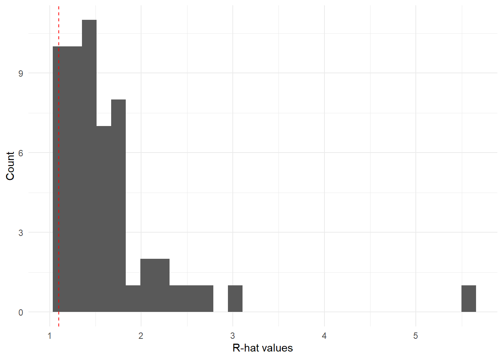
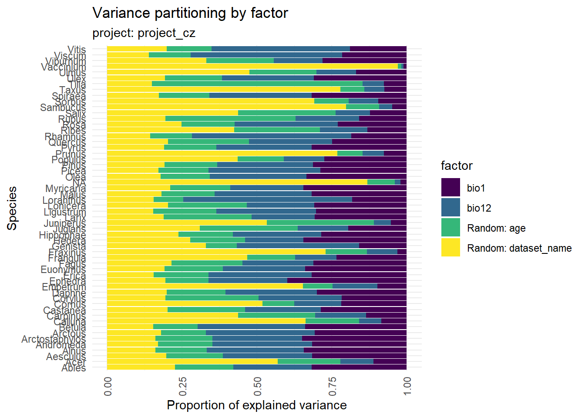
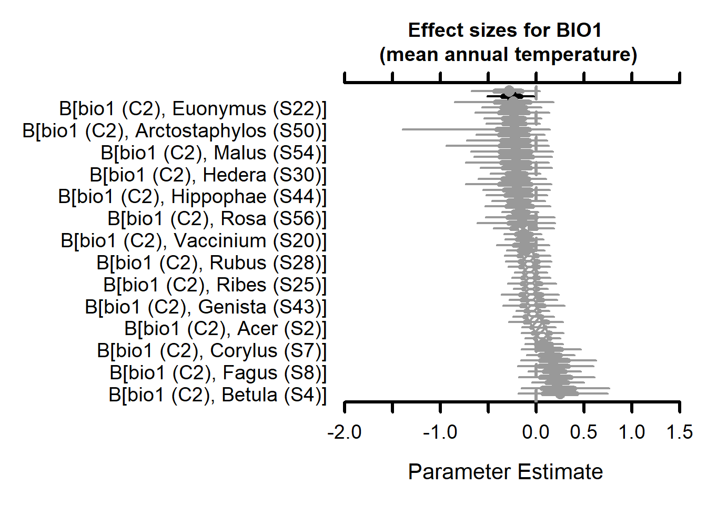
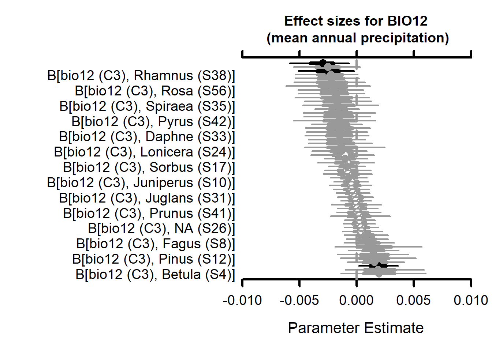
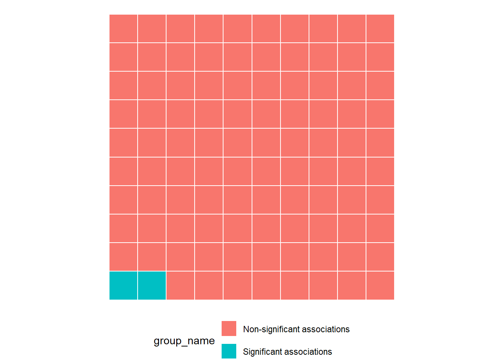
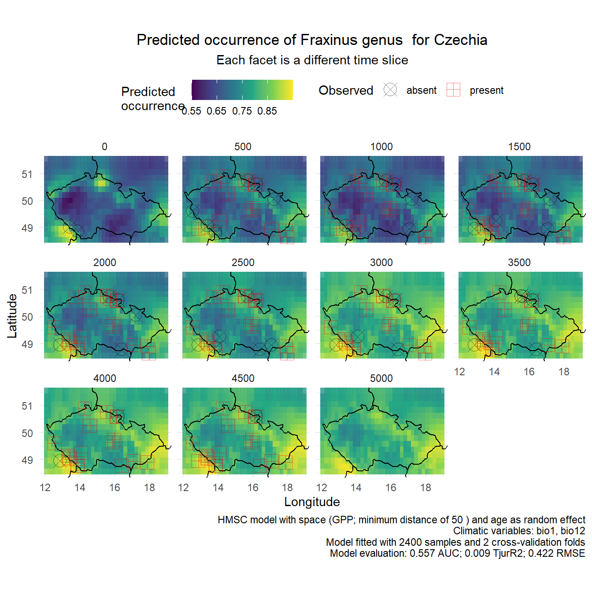
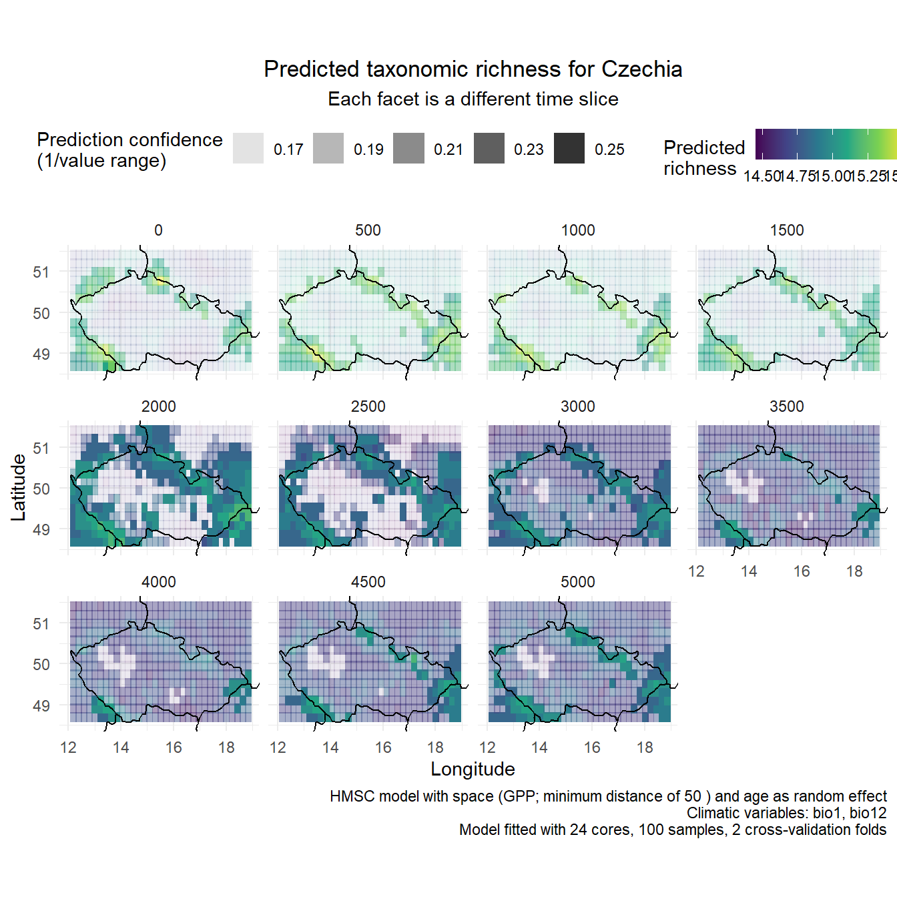
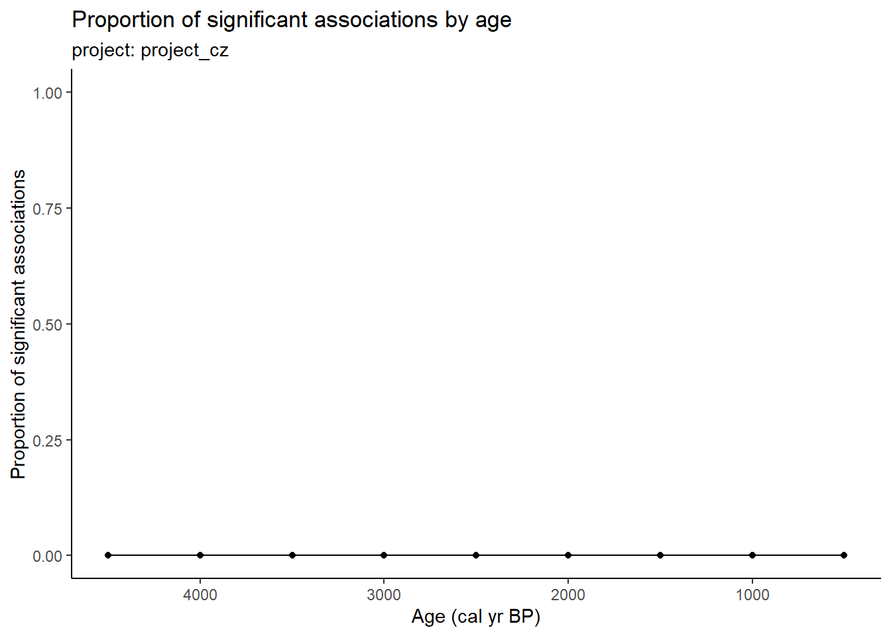
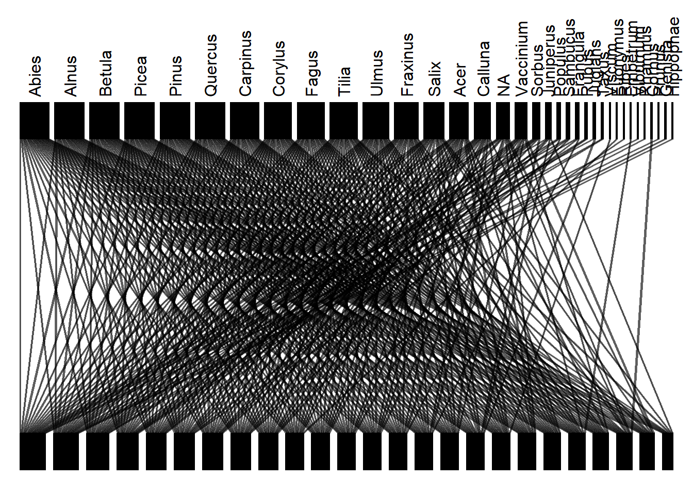
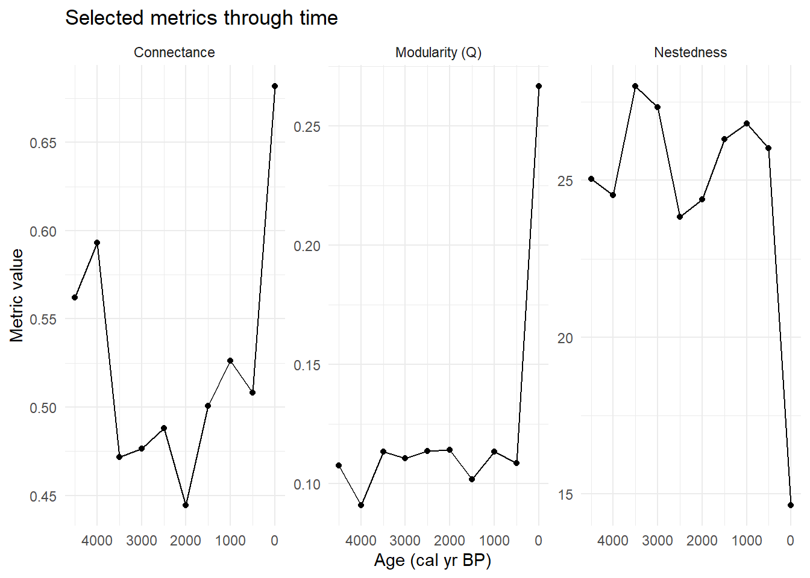

flowchart LR
Config-.->VegVault
Config-.->Classification
Config-.->Data_interpolated
Config-.->model
subgraph Project
direction TB
Config
end
subgraph Pipeline
direction LR
VegVault-->Data_community
VegVault-->Data_abiotic
Data_community-->Classification
Classification-->Data_harmonised
Data_abiotic-->Data_interpolated
Data_harmonised-->Data_interpolated
Data_interpolated-->model
model-->model_full
model-->model_null
model_full-->model_eval
model_null-->model_eval
model_eval-->species_associations
species_associations-->results
end
Report to coauthors
Basic Pipeline
Mermaid
Actual graph
here() starts at D:/GITHUB/BIODYNAMICS_vegetation_cooccurrence
- The library is already synchronized with the lockfile.Target graph of the basic pipeline
Model validation

We are selecting model based on the WAIC value (there is option to use ThurR2 as well). This is done automatically to selecte NULL vs FULL model.
Predictive power for individual species - summary
| metric | min | x1st_qu | median | mean | x3rd_qu | max | n_as |
|---|---|---|---|---|---|---|---|
| RMSE | 0.004 | 0.008 | 0.124 | 0.169 | 0.252 | 0.524 | NA |
| AUC | 0.020 | 0.296 | 0.379 | 0.367 | 0.496 | 0.628 | 15 |
| TjurR2 | -0.061 | -0.012 | -0.005 | -0.009 | -0.001 | 0.005 | 15 |
variation partitioning
Let’s pretend that the FULL model is the one we want to show here.

effect sizes of the environmental covariates


Species associations

Prediction on new data
Single species plot (biogeography)
We will fist plot the predicted values for a single species across all time slices.

Diversity through time

Pipeline with time
flowchart LR
Config-.->VegVault
Config-.->Classification
Config-.->Data_interpolated
Config-.->Data_subset
subgraph Project
direction TB
Config
end
subgraph Pipeline
direction LR
VegVault-->Data_community
VegVault-->Data_abiotic
Data_community-->Classification
Classification-->Data_harmonised
Data_abiotic-->Data_interpolated
Data_harmonised-->Data_interpolated
Data_interpolated-->Data_subset
species_associations_1-->results
species_associations_2-->results
species_associations_3-->results
subgraph Age_slices
direction LR
Data_subset-->model_age_1
Data_subset-->model_age_2
Data_subset-->model_age_3
model_age_1-->species_associations_1
model_age_2-->species_associations_2
model_age_3-->species_associations_3
end
end
here() starts at D:/GITHUB/BIODYNAMICS_vegetation_cooccurrence
- The library is already synchronized with the lockfile.Target graph of the time pipeline
Coocurences in time slices

Coocurences as food webs
We can think about the co-occurrence networks as bipartite networks (e.g., plants and their pollinators), where individual plots are one layer and species are another layer.
Example of one time slice:

We can then calculate network-level metrics for these bipartite networks.
Here we plot several metrics through time.
